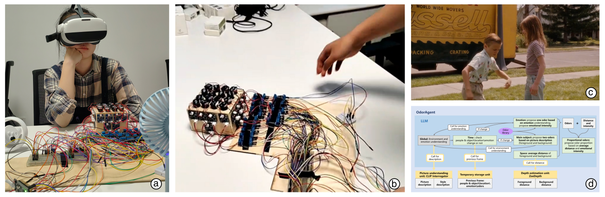
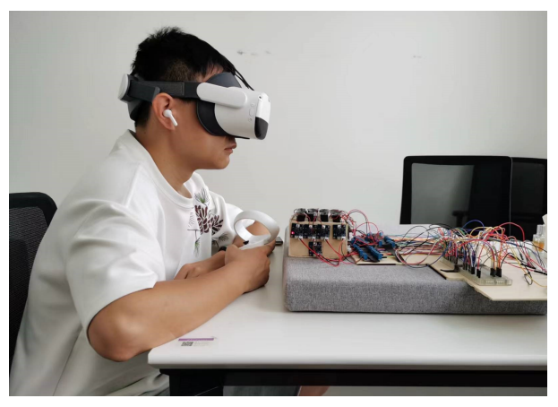
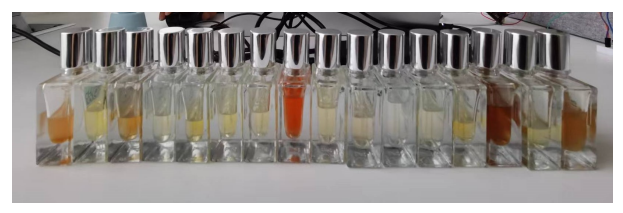

Project introduction
Extensive research has demonstrated the potential of adding scents to movies to heighten viewer experiences and immersion. However, traditional scent pairing with scenes often relies on professional perfumers, creating a barrier to widespread adoption in immersive experiences.
To address this, we employ a text-image model coupled with a large language model, creating an intelligent agent for scent blending in movie-watching. This agent matches appropriate scents to scenes, making scent pairing more accessible. We establish a comprehensive framework for scent generation across subject matter, emotion, space, and time. User experiments with OdorAgent, our intelligent agent, reveal its scene versatility, enabling easy and convenient odor experience design for inexperienced individuals based on video images.
(The paper is under review)

Research Approach
We introduce the OdorAgent olfactory experience design framework, which leverages large language models to generate scent sequences aligned with videos. The framework comprises two key components: image information extraction and scent selection methods.
Computer vision models are utilized to extract foreground, background, emotional, and foreground-background distance information from the visual scene. Using this information, large language models then select appropriate scents from a library.
In the end, we conducted user experiments, collecting and analyzing user feedback on the experience of watching VR videos accompanied by olfactory stimuli, aiming to assess whether it enhances immersion and embodiment.

Contribution
I actively participated in various stages of the research as a team member. In the early stages, I conducted extensive research on potential AI technologies, assisting in the decision to use large models for selecting scent categories. I created a demo using the CLIP large model to recognize images in video frames, contributing to the accomplishment of image recognition tasks. I also played a role in setting up the perfumer device and conducting user experiments.
Through discussions with team members, I contributed numerous ideas and technical insights to the research, gaining knowledge in deep neural networks and the application of prompt engineering.
About this Post
This post is written by Jason, licensed under undefined.